One of the most memorable incidents at Maroda between 1992–94 was a picnic to what are known as the Hazra Falls — which people traveling between Bombay and Calcutta by train are more apt to miss than see, somewhere just before they enter a tunnel a couple of hours out of Nagpur. The picnic would not have become "The Picnic" had it not been for a series of events that snatched this particular outing from one of the many others into an epic that rivals Jerome K. Jerome's boat outing up the Thames with his two friends and dog.
For starters, this was not one of the amateur efforts we often undertook on our respective motorcycles. This was a company-funded affair — which was perhaps why it was doomed to start with — which meant we got to go in a bus and the number of people involved was quite high. The trip involved a reconnaissance mission on three motorcycles with four riders: two Yamahas with one rider each (Purnendu Chakraborty and Sudip Sen) and my little Kawasaki with me and Shridhar Subramaniam astride. The location was not known to anyone except Gyani, the gentleman who ran the cafeteria.
The riders of the Yamahas had two definite advantages: comparatively powerful machines and they knew the way to Dongargarh, apparently like the backs of their respective hands. Elaborate instructions were given to us rookies — since we were going to be left far behind — as to how not to miss the turn for Dongargarh. True to our reputation we arrived at the fork and found no one waiting for us. We guessed the two fearless riders would have reached Hazra Falls by now, so we trundled on to Dongargarh, sought directions, and set off. A few kilometers further it seemed less and less likely that Purnendu and Sudip would have continued without us. Something was definitely wrong. Instinctively we headed back to Dongargarh, and who do we see but our good friend Purnendu coming in our direction, quite lost. He had missed the turn — and when we asked where Sudip was, he said, "Gee, how were we to know?" Apparently the two of them had chosen to have a friendly race, and that is how Purnendu had missed the turn. We had lunch at Dongargarh and with no Sudip in sight we figured he was truly lost or had gone way ahead.
We then proceeded past the stream that needed fording and down many a dirt track, asking for directions — with everyone saying it was another 8 kilometres, until we had traveled about 40. Hazra Falls did live up to Gyani's description, even though we found no evidence of Sudip or his Yamaha. We came back quite worried, until upon arrival in Maroda we saw his bike parked right there. Sudip had missed the turn and continued for miles, wondered why Purnendu had not caught up with him, and while he was wondering, sleep overcame him and he decided to take a nap — after pulling over, of course — until the rest of the slow pokes caught up with him. One wonders if he was a rather celebrated hare in another life.
Anyway, the picnic proper took off under the able organisation of Mr. T. K. Baidya, not to mention the misgivings of our resident doubting-Thomas-designate, Parthasarathi Mookerji. I had my little Kodak Kroma at hand, and as the day began to unravel — literally — it was put to very good use. The album was lost for a while and only recently discovered during a trip back to Meerut. The next 23 pictures and their captions speak of the day.
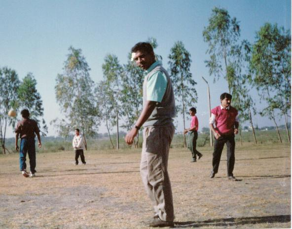
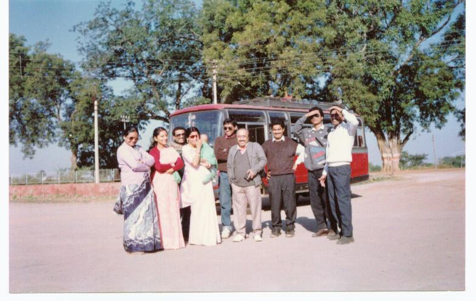
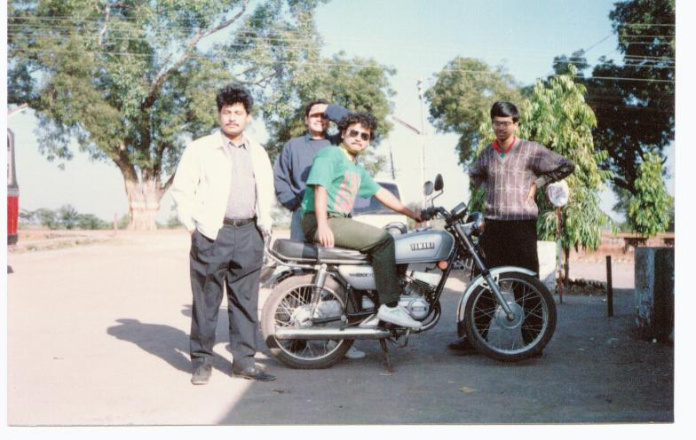
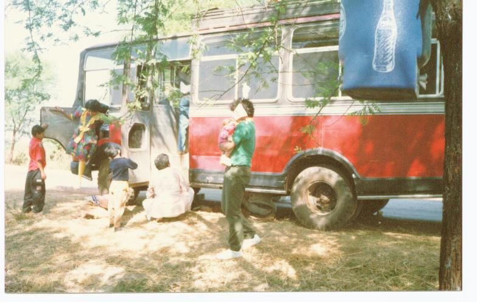
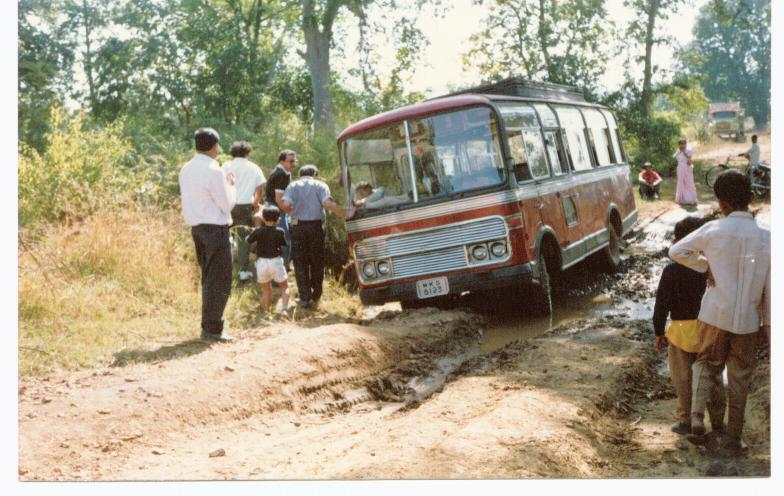
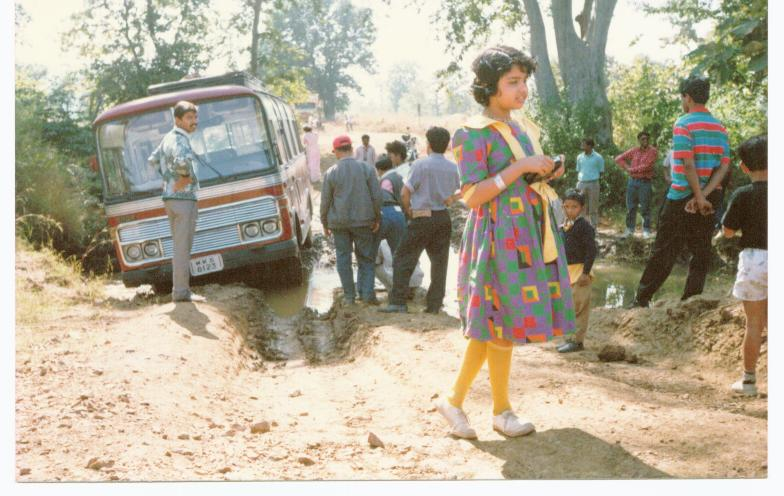
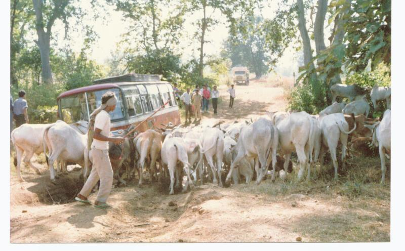
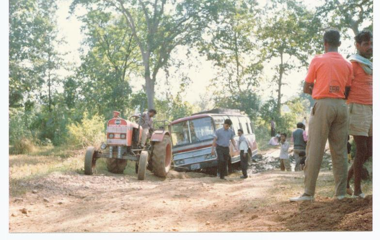
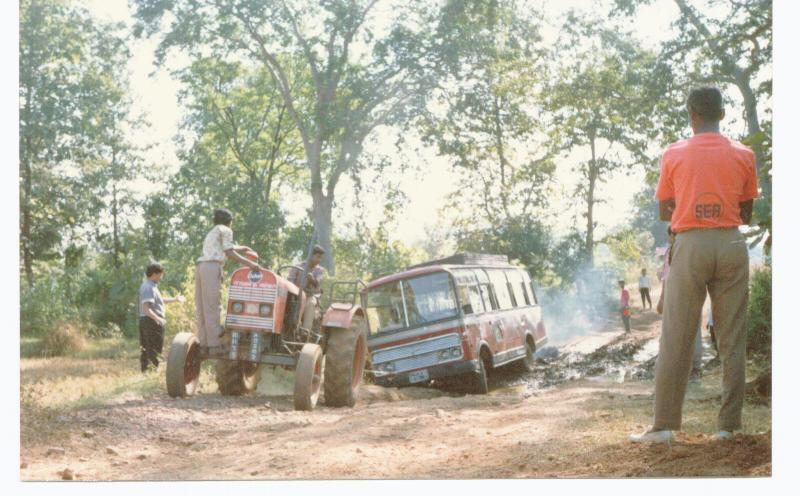
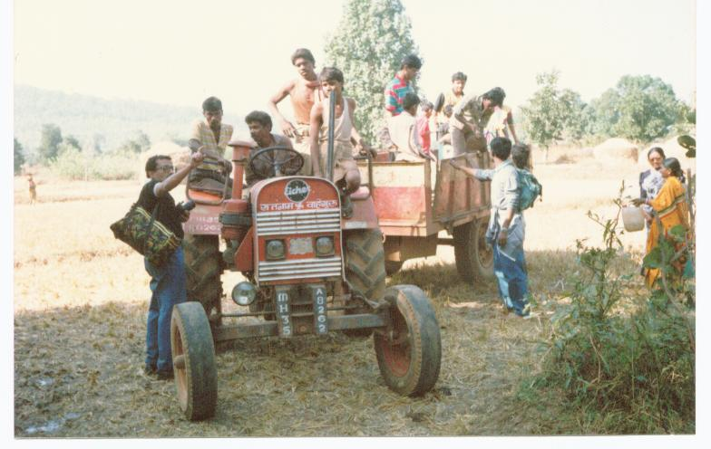
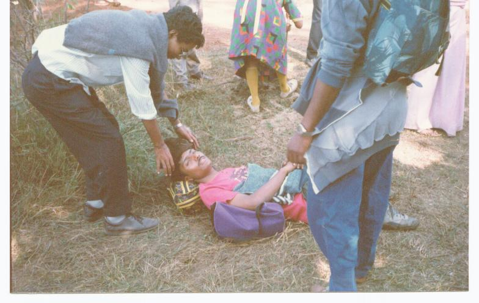
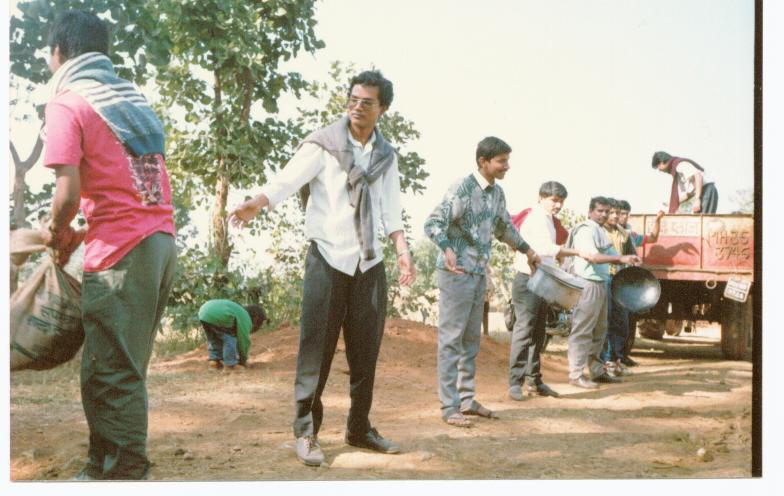
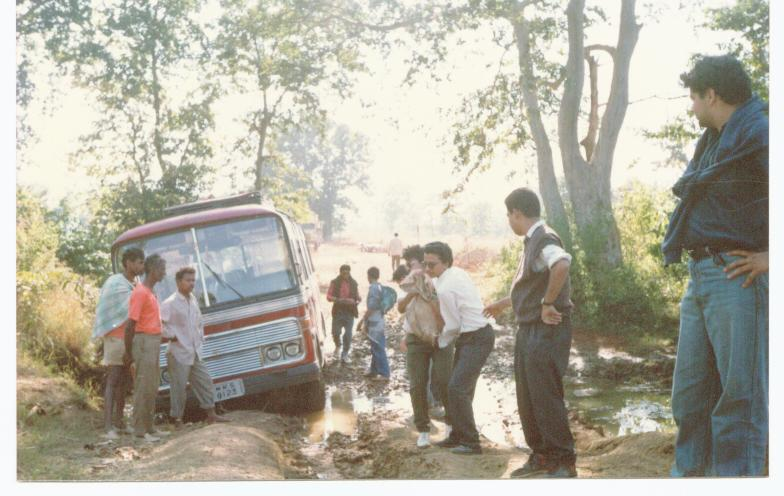
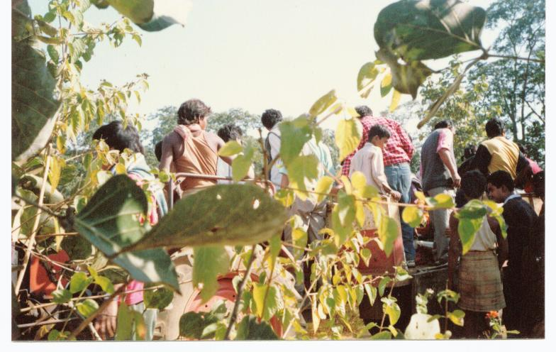
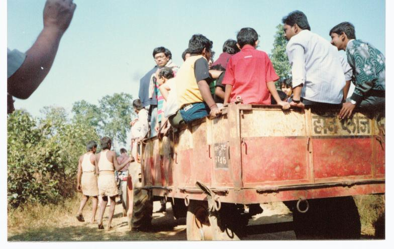
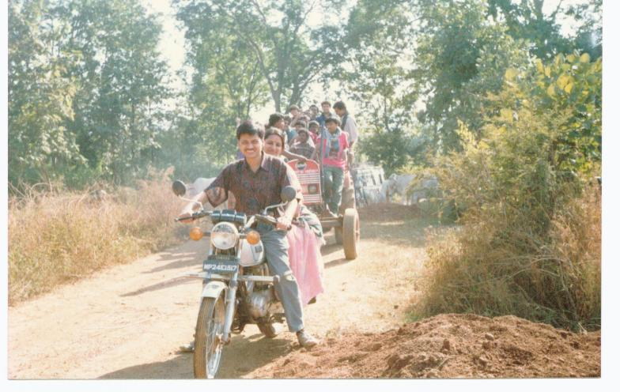
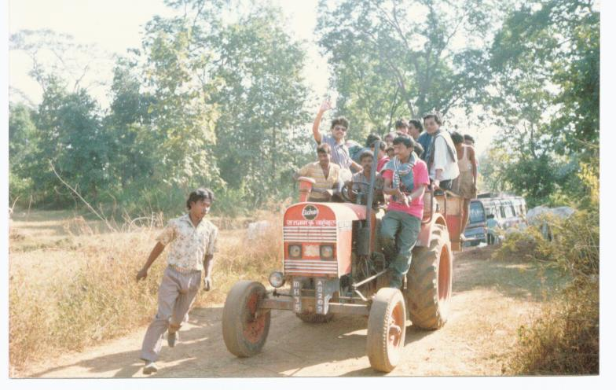
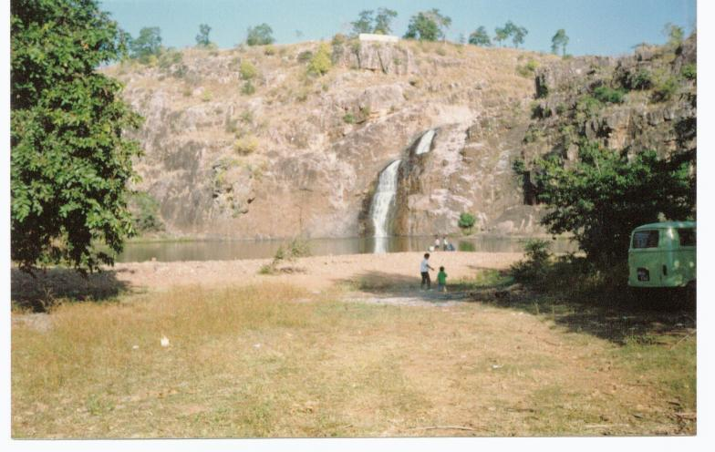
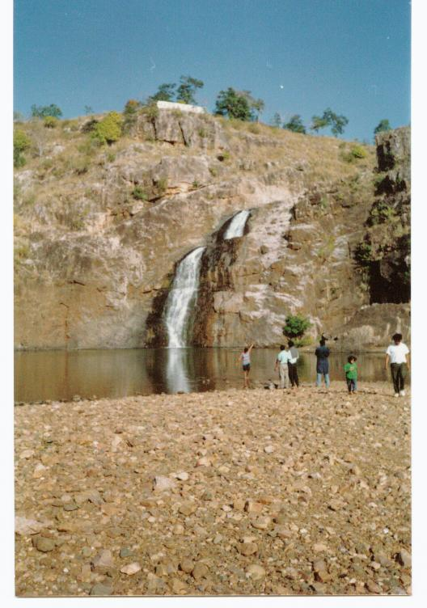
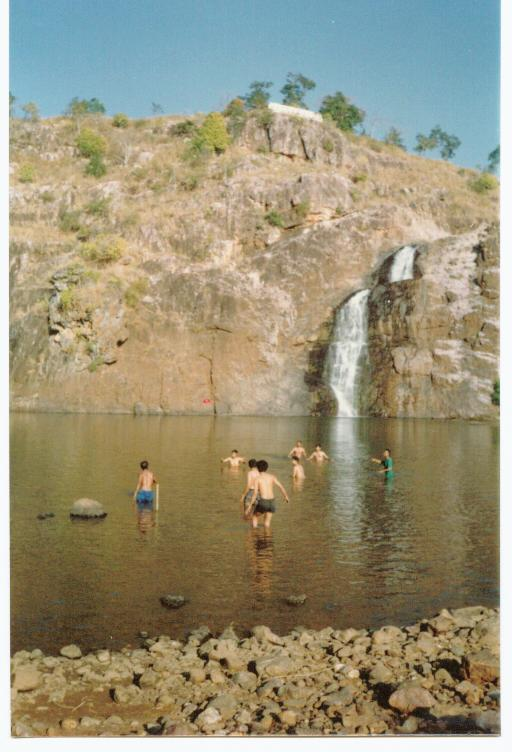
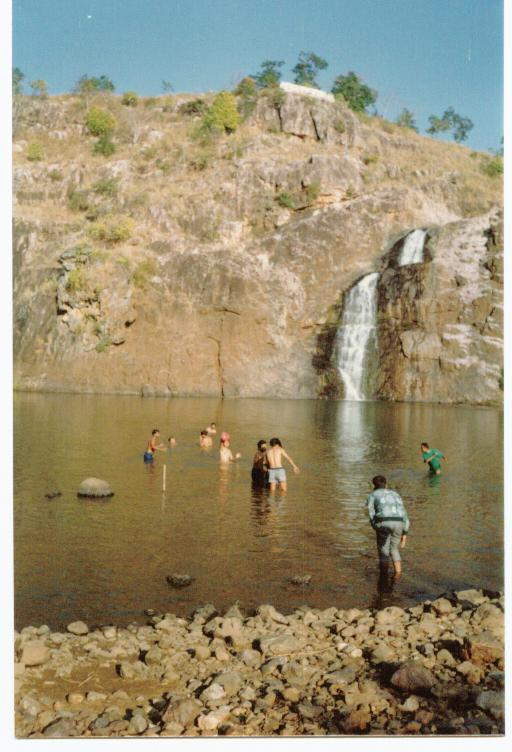
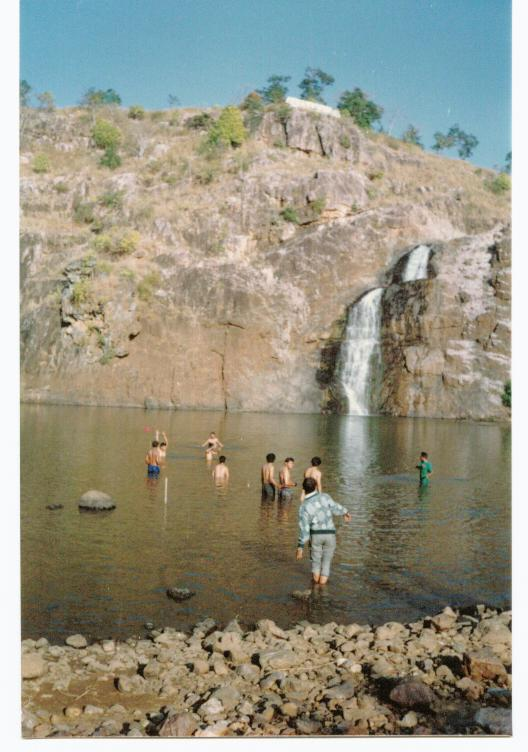
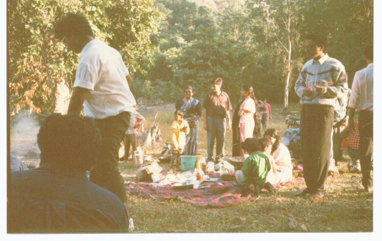